Halo, saya Muhammad Rizky Maulana
Web Developer dan Data Entry
Selamat datang di portofolio saya!
Download CV (PDF)TENTANG SAYA
Saya merupakan lulusan Sarjana (S1) Teknik Informatika yang berfokus pada pengembangan aplikasi web,
pengelolaan basis data, dan efisiensi operasional. Berpengalaman merancang serta mengimplementasikan
sistem berbasis PHP, JavaScript, dan MySQL melalui proyek Kerja Praktik (KP) serta Skripsi
menggunakan metode Analytical Hierarchy Process (AHP).
Tak hanya di bidang koding, saya juga menerapkan pengelolaan
data dan dokumen menggunakan Microsoft Office (Word, Excel, PowerPoint) yang diasah melalui kegiatan
Pengabdian Kepada Masyarakat (PKM) sebagai pemateri pelatihan.
Didukung pengalaman kerja operasional industri sebagai Operator Mixing, saya memiliki ketelitian tinggi,
etos kerja yang kuat, kedisiplinan terhadap SOP. Saya selalu terbuka untuk berkolaborasi dan berkontribusi
dalam proyek pengembangan web, pengolahan data (data entry), maupun dukungan sistem IT.
PORTOFOLIO
Portofolio saya mencakup berbagai proyek dan produktivitas yang menunjukkan kemampuan dan pengalaman saya.
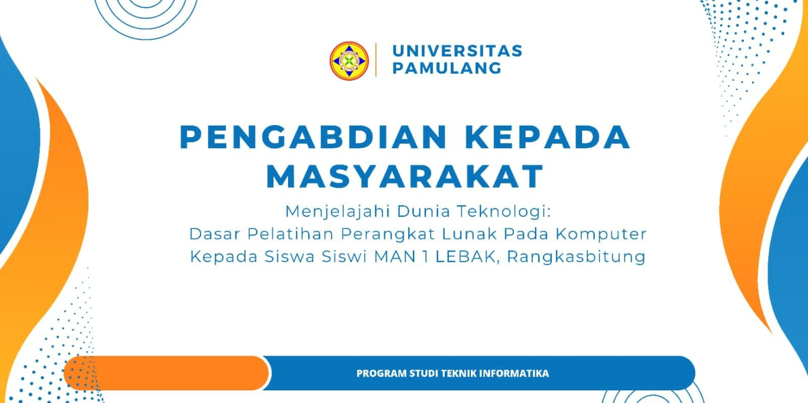
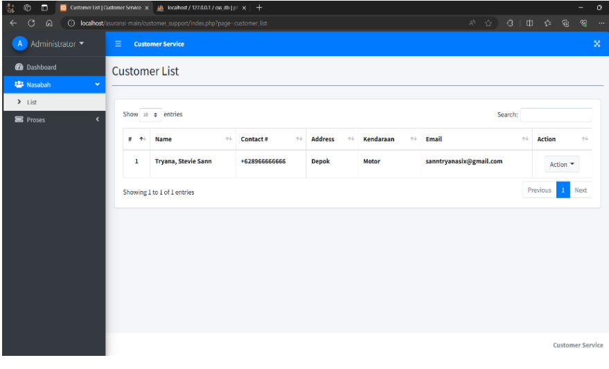
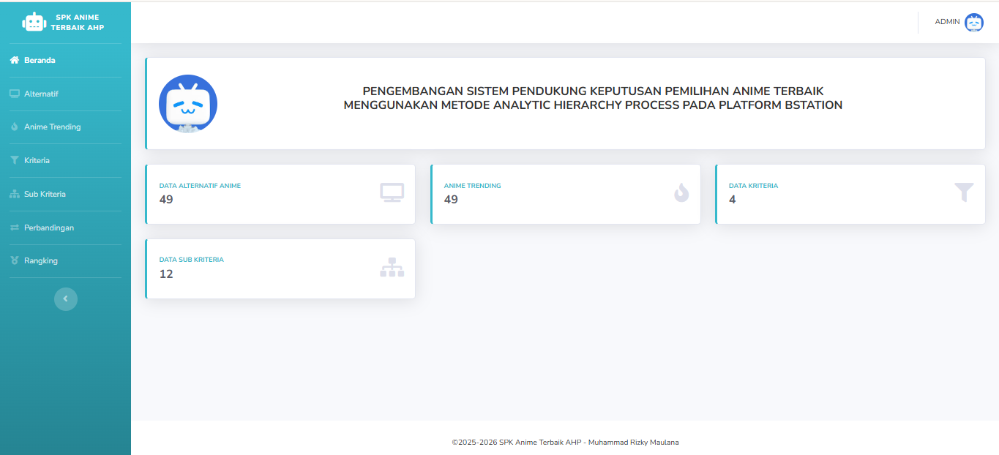
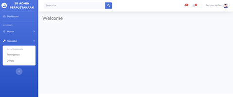
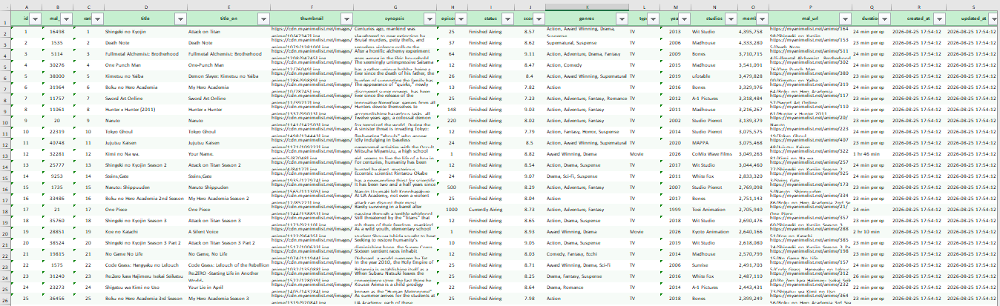
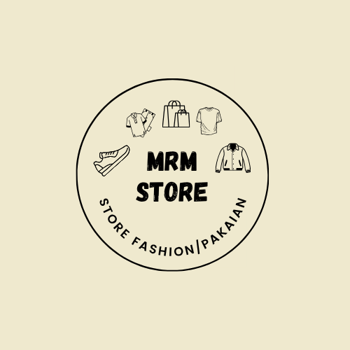
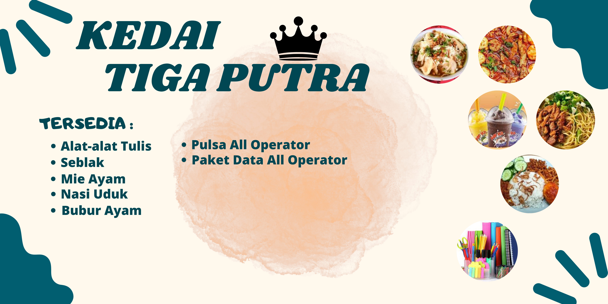
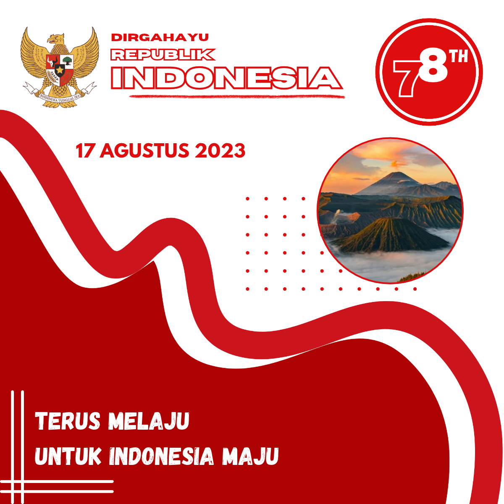
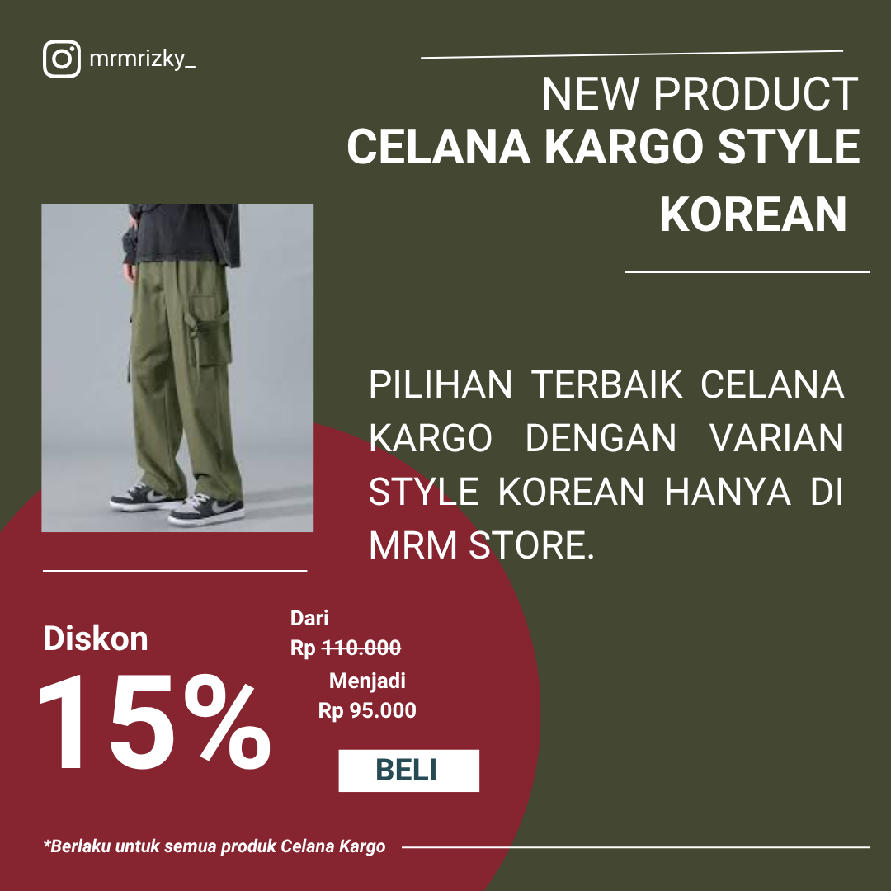
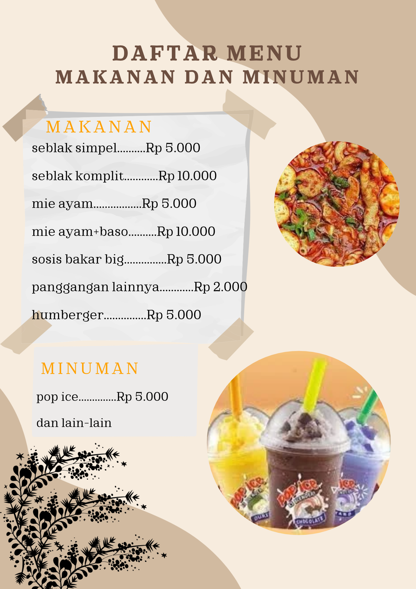
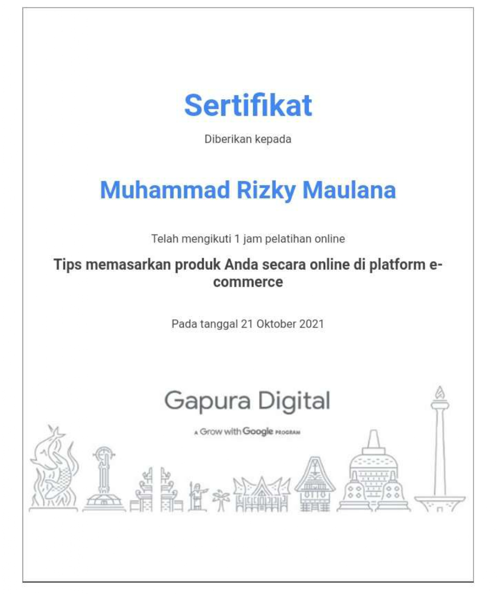
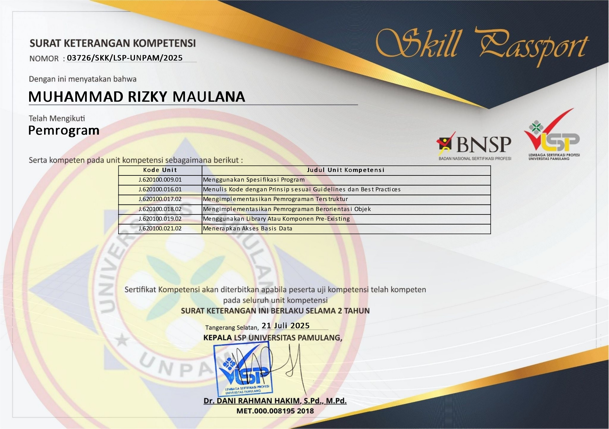
PENGALAMAN
Pengalaman kerja saya mencakup berbagai bidang yang memungkinkan saya untuk mengembangkan keterampilan dan pengetahuan yang relevan.
PT GEN (Global Elektrik Nasional)
Operator MixingSeptember 2021 - Desember 2021
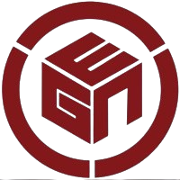
- Mengoperasikan dan melakukan perawatan harian mesin pencampur berkapasitas besar sesuai SOP perusahaan.
- Menimbang dan mencampur bahan baku berdasarkan formula produksi dengan tingkat akurasi 100%.
- Menjaga konsistensi dan kualitas campuran untuk meminimalkan cacat produk sebelum material diteruskan ke proses produksi berikutnya.
- Menerapkan standar K3 secara disiplin demi menjaga lingkungan kerja yang aman dan produktif.
KEMAMPUAN & KETERAMPILAN
Keterampilan yang saya miliki mencakup berbagai aspek teknis dan interpersonal yang memungkinkan saya untuk berkontribusi secara efektif dalam lingkungan kerja yang dinamis.
Kemampuan Teknis
- Web Developer
- Programmer
- IT Support
- Administrasi Pengelolaan Dokumen dan Laporan
- Data Entry
- Operasional Produksi
- Kontrol Kualitas Dasar
Kemampuan Software
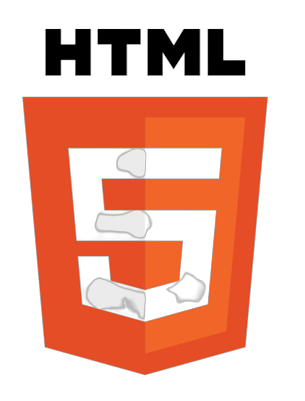
HTML
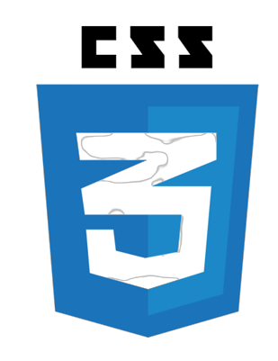
CSS
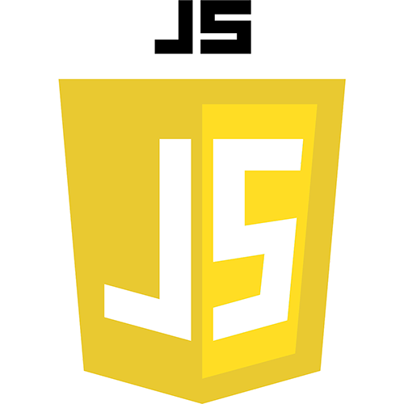
JavaScript
PHP
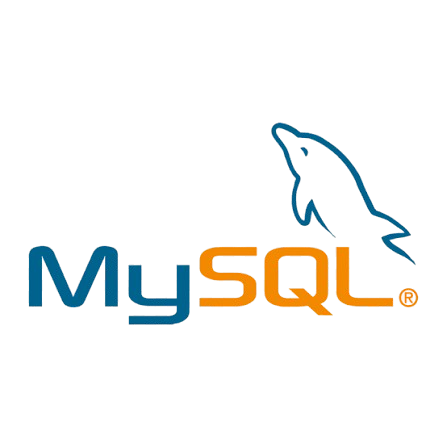
MySQL
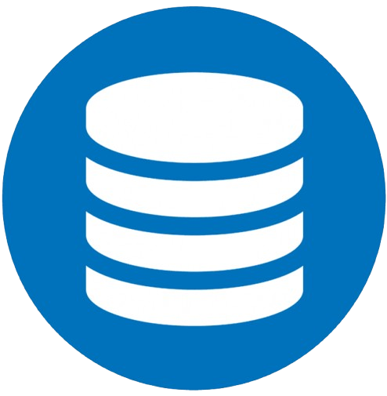
Database

Word
Excel
Powerpoint

Canva
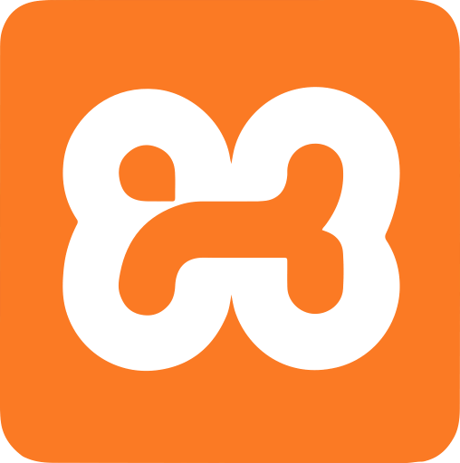
Xampp
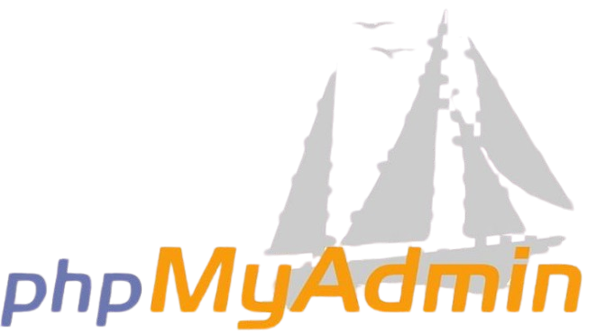
Phpmyadmin
Visual Studio Code
Soft Skills
- Adaptabilitas
- Manajemen Waktu
- Problem Solving
- Kreativitas
- Komunikasi
- Empati
- Kerja Sama Tim
PENDIDIKAN
Pendidikan sebagai fondasi utama dalam membentuk individu yang kompeten dan berpengetahuan luas. Melalui pendidikan, seseorang tidak hanya memperoleh pengetahuan akademis, tetapi juga keterampilan sosial, etika, dan kemampuan berpikir kritis yang diperlukan untuk menghadapi tantangan kehidupan.
Universitas Pamulang - (2021 - 2026)
Teknik Informatika - IPK: 3.37
-
Skripsi dan Publikasi Ilmiah
“Pengembangan Sistem Pendukung Keputusan Pemilihan Anime Terbaik Menggunakan Metode Analytic Hierarchy Process Pada Platform Bstation” — dipublikasikan pada Jurnal Informatika dan Teknik Elektro Terapan, Vol. 14 No. 3, Agustus 2026, terakreditasi SINTA 5.
-
Kegiatan Mata Kuliah Kerja Praktik (KP)
Merancang dan membuat sistem “Perancangan Sistem Aplikasi Asuransi Keluarga Berbasis Web di PT. Mitra Proteksi Madani” pada September 2024.
-
Kegiatan Pengabdian Kepada Masyarakat (PKM)
Anggota dan pemateri “Pelatihan Komputer Menggunakan Microsoft Office kepada Siswa-Siswi MAN 1 Lebak, Banten” pada Maret 2024.
KONTAK SAYA
Silahkan melihat sosial media saya dengan klik dibawah ini:
Ayo kita berdiskusi